FPGAs seem like lots of fun but the initial investment in time and energy to get up and running with one is so very high. I recently had a little bit of time (and motivation) to learn a little about how to get up and running with Vivado and VHDL on an FPGA (I have some previous experience from some years ago with Vivado and HLS, this is slightly similar). When having gone through some kind of hurdle, I feel it is nice to try to make it a bit easier for the next person by writing about the experience.
The FPGA used here is the Artix 7 on a Nexys A7-100t board from Digilent. I know there are probably already lots of "how-to" manuals for this but this one will be from my perspective as somewhat of an FPGA noob! I hope that leads to a somewhat different point of view.
All content provided in this document is for informational purposes only. The authors makes no guarantees as to the accuracy or completeness of any information within this document.
The authors will not be liable for any errors or omissions in this information nor for the availability of this information. The authors will not be liable for any losses, injuries, or damages from the display or use of this information.
There is a little bit of setup needed to get started. This comes in the form of "board files" containing parameters for a particular type of FPGA development board. Digilent provides board files in a github repository.
Locate the directory where you installed Vivado and check for this subdirectory <Vivado_dir>/<version>/data/boards/board_files. If you already have a nexys-a7-100t sub folder located there, you do not need to do anything. But if not you should grab the board files from Digilent github, unzip the archive and locate nexys-a7-100t directory. This directory will be under a subdirectory called new/board_files.
Task: Copy the nexys-a7-100t directory into your vivado installation board_files directory.
Start up Vivado. If you use command line, it would be something like this:
> source ~/opt/Xilinx/Vivado/2019.2/settings64.sh
> vivado &
and if you do not, then just double click your Vivado icon on the desktop.
After a while (everything takes a while, quite a while, when using Vivado) you will be greeted by the following screen:
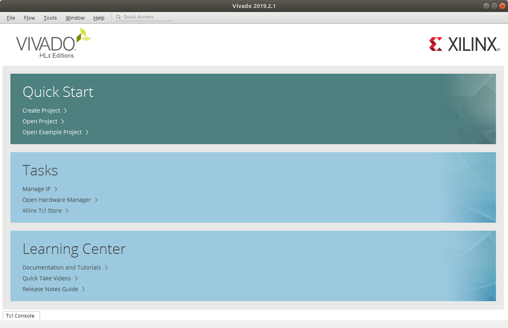
Task: Click on Create Project. You find this in the Quick Start area. This starts up the Create a New Vivado Project wizard. the first thing it does is show a little wizard welcome screen. Just click next here.
Task: Make up a name for the project and pick a location for the project related files. Check the Create project subdirectory checkbox. Click next to move on to the next setting. I called my project "Blinky" as that is where I hope this will be going.
| Wizard welcoming screen | Project name and location |
|---|---|
|
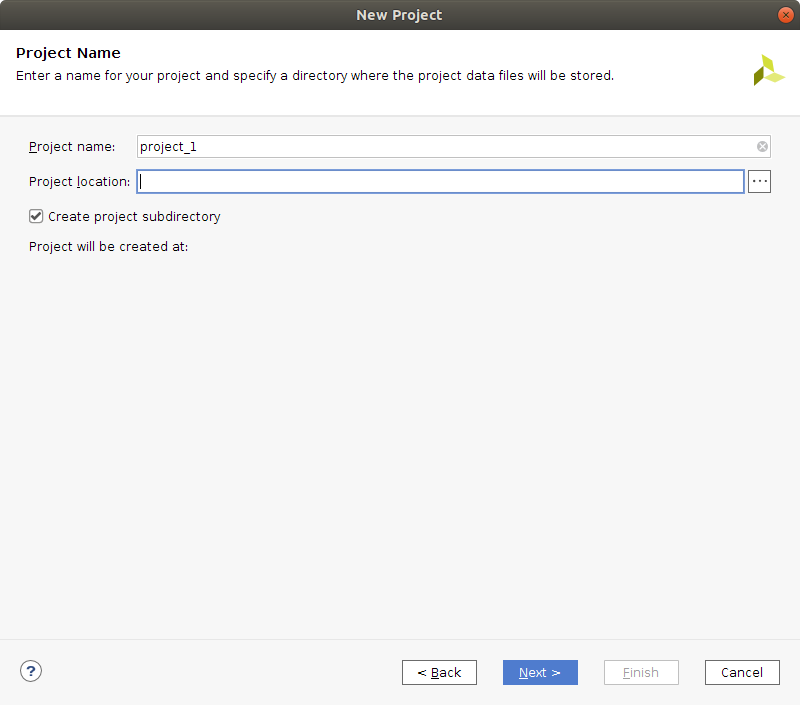 |
Task: Next up select Project Type. The type to use here is RTL Project and also click the Do not specify sources at this time checkbox. Then click next.
The next step is to select the FPGA board to use as target. Locate the two tabs Parts and Boards and switch to tab Boards. You can narrow the list of selections down a bit by typing "nexys a7" into the search field.
Task: Select the Nexys A7-100T board from the list and click next.
| Project type | Select the FPGA board |
|---|---|
| 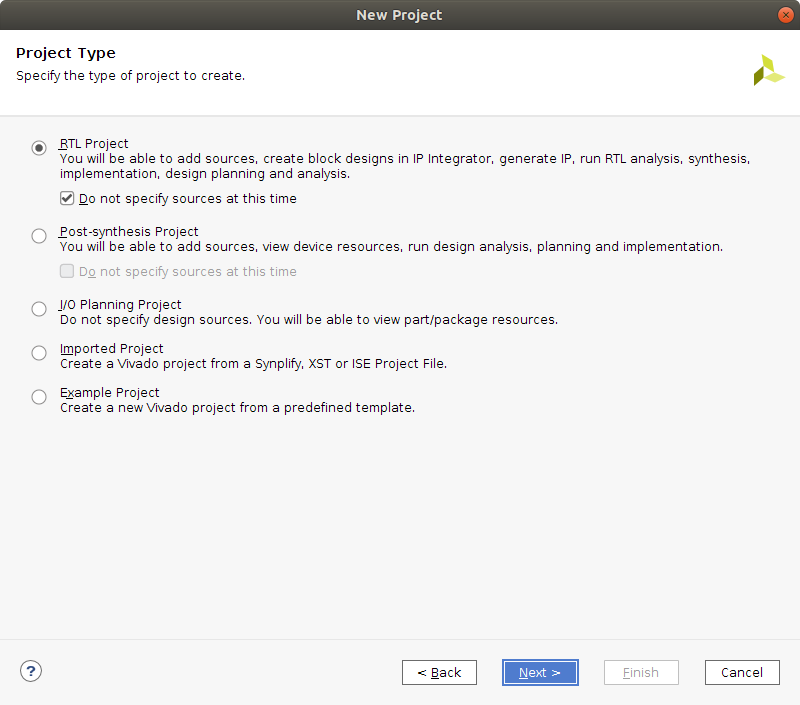 | 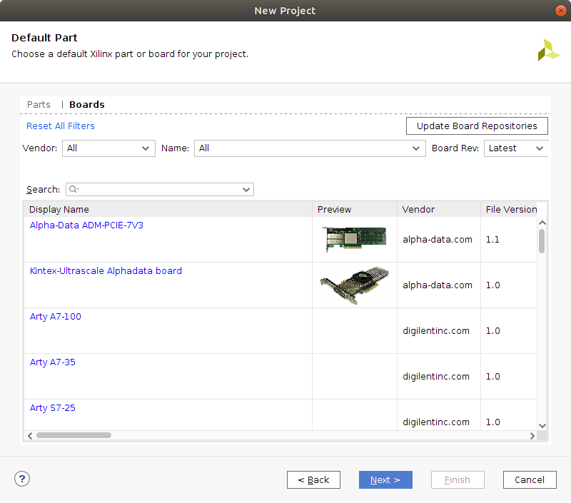 |
Project configuration is now completed and you will see a summary of your settings.

Task: Click on Finish.
After a brief pause (brief by Vivado standards) the GUI starts up and you will be looking at something similar to this.
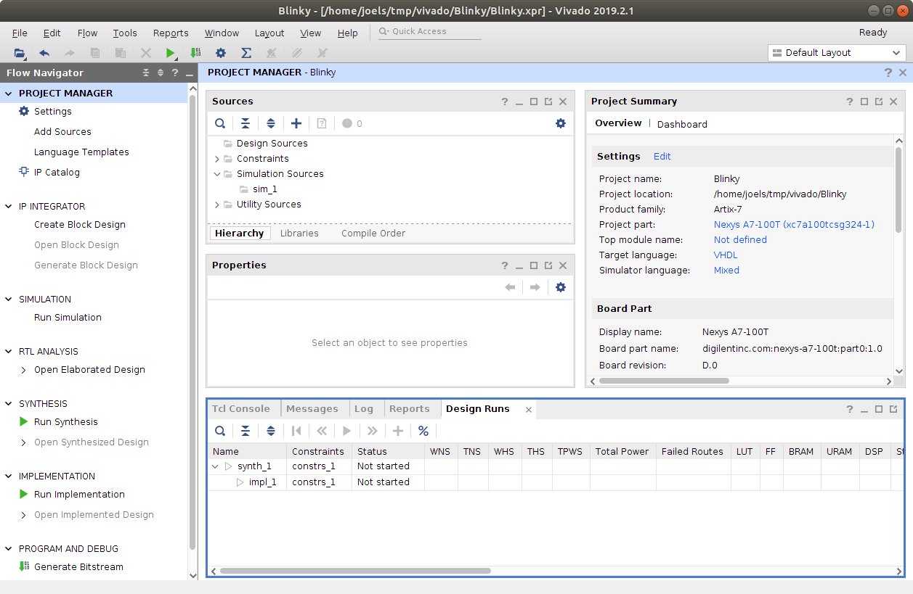
The GUI is divided into two main areas, a left Flow Navigator and a right side that changes quite a bit depending on what is currently going on. Right now the right hand side of the GUI is showing the Project Manager
The first thing we are going to need to do is create some VHDL source.
TASK: In the Project Manager locate the Sources pane and right click within it. This brings up a list of choices, click on Add Sources. We are going to add a design source so check the Add or create design sources option and click next.
Task: Click on the Create File button and provide a name for the file. I call mine blinky click ok in the Create File dialog and then click Finish in the Add Sources window. After clicking Finish a Define Module dialog appears. This dialog lets you specify interface for the module if you wish, but I am going to do that by typing the VHDL manually. So just click Ok in this dialog.
| Add Sources | Add or Create Design Sources |
|---|---|
| 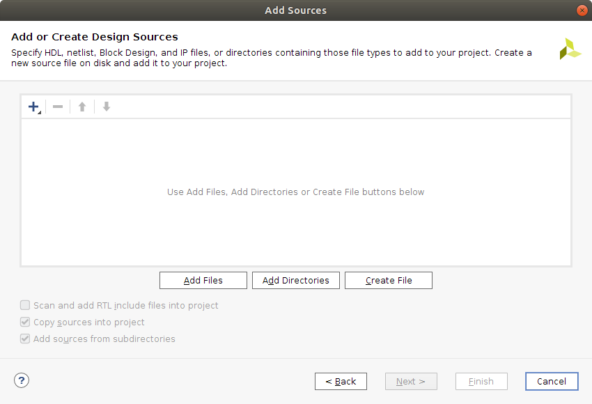 |
Now there should be a file called blinky.vhd listed under Sources in the Project Manager. Double click on this to open up an editor for the file.
I have cleaned out most of the comments from the file, but the contents will be roughly the following.
library IEEE;
use IEEE.STD_LOGIC_1164.ALL;
--use IEEE.NUMERIC_STD.ALL;
entity blinky is
-- Port ( );
end blinky;
architecture Behavioral of blinky is
begin
end Behavioral;
So, you get a skeleton of a module. In the next section I will try to fill that with some code. Keep in mind that I am a bit of a beginner at VHDL (feedback much appreciated).
Let's start with the entity declaration.
entity blinky is
-- Port ( );
end blinky;
We are going to need a clock input signal and at least one output signal to drive an LED with. So add these to the Port list.
entity blinky is
Port (
clk : in std_logic;
led : out std_logic
);
end blinky;
For the architecture (implementation of the entity) with my limited experience, I have a feeling it would work with a state machine that either is in a Led is on or Led is off state and that it remains in these states for some number of clock ticks. So, we need a way to maintain state and a way to count ticks. For the counter I will use an unsigned, so using IEEE.NUMERIC_STD will be needed.
architecture Behavioral of blinky is
type state is (LED_On, LED_Off);
signal s: state;
signal counter : unsigned(24 downto 0);
begin
end Behavioral;
So, now there are two states LED_On and LED_Off the s signal can be set to one of these states and a counter that can count all the way up to some high number above 33 million. Don't know yet for how long the LED must be in on and off state (number of ticks) for it to visibly blink.
What we want to implement now is hardware that sets the led signal to one when in the On State and zero when in Off, we also want to increment a counter each clock tick and check if the counter goes over some large number. When the counter goes above the large number we reset it to zero and also switch state.
architecture Behavioral of blinky is
type state is (LED_On, LED_Off);
signal s: state;
signal counter : unsigned(24 downto 0);
begin
blinker: process (clk)
begin
if rising_edge(clk) then
case (s) is
when LED_On =>
led <= '1';
when LED_Off =>
led <= '0';
end case;
if (counter >= 30000000 and s = LED_On) then
counter <= '0' & X"000000";
s <= LED_off;
elsif (counter >= 30000000 and s = LED_Off) then
counter <= '0' & X"000000";
s <= LED_on;
else
counter <= counter + 1;
end if;
end if;
end process;
end Behavioral;
This code is a bit odd, for example it does not start from any known state when it comes to s or counter. What could be added is a reset signal
and some logic associated with the reset that sets s to for example the Off state and sets counter to 0. My feeling is that it wont matter much in this case, as no matter what s and counter is initially it will sort itself out in a moment. This is of course no assumption you can make in general!
Here is the complete VHDL code listing that will be used:
library IEEE;
use IEEE.STD_LOGIC_1164.ALL;
use IEEE.NUMERIC_STD.ALL;
entity blinky is
Port (
clk : in std_logic;
led : out std_logic
);
end blinky;
architecture Behavioral of blinky is
type state is (LED_On, LED_Off);
signal s: state;
signal counter : unsigned(24 downto 0);
begin
blinker: process (clk)
begin
if rising_edge(clk) then
case (s) is
when LED_On =>
led <= '1';
when LED_Off =>
led <= '0';
end case;
if (counter >= 30000000 and s = LED_On) then
counter <= '0' & X"000000";
s <= LED_off;
elsif (counter >= 30000000 and s = LED_Off) then
counter <= '0' & X"000000";
s <= LED_on;
else
counter <= counter + 1;
end if;
end if;
end process;
end Behavioral;
We have VHDL code with signals clk and led but nothing that tells vivado how those signals relate to clock generation or IO on the FPGA. To fix this we must create a constraints file that makes these connections from VHDL concepts to corresponding functionality on the FPGA.
Task: In the Sources pane of the Project Manager right click and select Add Sources. Check the Add or create constraints radio-button. and click next. Now click the Create File button and a dialog pops up that asks you to provide a name for a file of type .XDC. I just call the file constraints and click ok. Then click Finish in the Add or Create Constraints dialog.
| Add Sources | Add or Create Constraints |
|---|---|
| 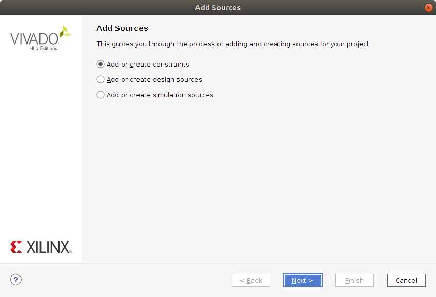 | 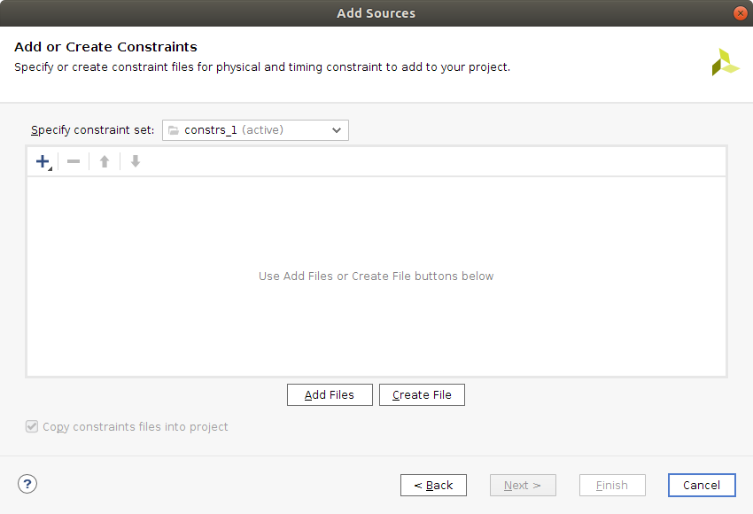 |
If we go back to the Sources pane of the Project Manager there should now be a file listed under Constraints. Double click on this to open the file in the editor. It should be empty.
Copy the following into the constraints.xdc file.
create_clock -period 10.000 -name clk -waveform {0.000 5.000} [get_ports clk]
set_property -dict { PACKAGE_PIN E3 IOSTANDARD LVCMOS33 } [get_ports { clk }];
set_property -dict { PACKAGE_PIN H17 IOSTANDARD LVCMOS33 } [get_ports { led }];
The first line sets a timing constraints that tells the system we want the design to run at 100MHz (period 10ns). You can also tweak the clocks duty cycle and phase by adjusting the waveform parameters.
The next line states that something called package pin E3 should be connected to the VHDL signal clk. The package pins and their meaning can be found in the reference manual provided by the board manufacturer. In this case E3 is associated with clocking resources.
Lastly the led signal is connected to H17 which is a pin on the FPGA connected to an LED on the board. The LED is located at the bottom right of the board, right above a switch.
Task: add the constraints to the constraints.xdc file and save it using CTRL + s.
*Note: There is a master constraints file that Digilent provides for the board. You can download it and then tweak it as needed depending on your design.
Now we have reached the point where it is time to start the journey of turning the VHDL together with the constraints into hardware. This is where the Flow Navigator on the left hand side of the GUI comes in.
We are going to perform the three bottom steps of this flow, Synthesis, Implementation and Program and debug.
Task: Click on Run Synthesis under Synthesis in the Flow Navigator. This brings up a Launch Runs dialog where you can configure some parameters related to system resources to use for the synthesis task (if you have a separate computer with more power, I guess you can use that as a kind of build-server). The defaults are fine, so I click Ok.
| Launch Runs | Synthesis Completed |
|---|---|
| 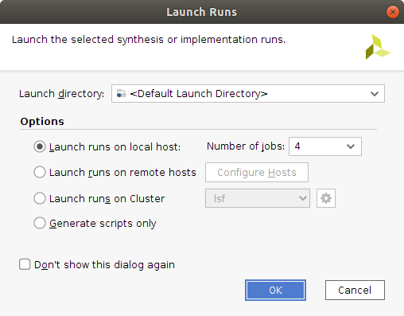 | 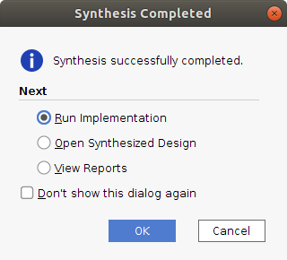 |
Go make a cup of coffee while Vivado is crunching numbers.
Task: After a moment the Synthesis Completed dialog will appear. The Run Implementation selection is already checked. Keep it so and click on Ok to start the Implementation part of the Flow. Another Launch Runs dialog appears, this time it is about configuring the Implementation step. Just click Ok.
Vivado will be busy for a while again but it is too soon for another cup of coffee.
Then the Implementation Completed dialog appears!
TASK: in the Implementation Completed dialog click on Generate Bitstream and click Ok. There will, yet again, be a Launch Runs dialog where just clicking Ok is fine.
After a moment a Bitstream Generation Completed dialog appears. Select *Open Implemented Design" and Just click ok.
This opens up some interesting visualizations of your design that you can explore.
| Graphical illustration of hardware | Zoomed in |
|---|---|
| 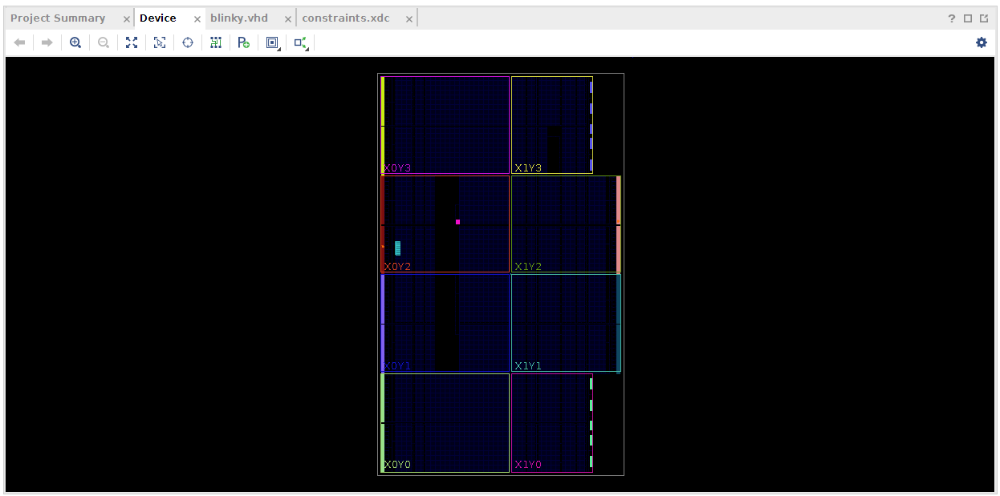 | 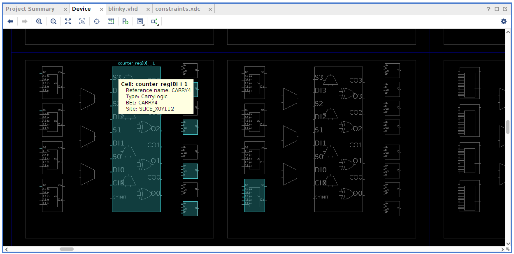 |
Anyway! We have reached the point where we have a bitstream that we can program onto the FPGA.
Make sure your Nexys A7-100T is connected to your computer and turned on at this point
TASK: At the bottom of the Flow Navigator there is the Program and debug operation. Under Program and debug you can find Open Hardware manager that can be "unfolded". Unfold this and click on Open Target and select Auto Connect. Now the Program Device option should be activated. Click on Program Device and select your device. Not a Program Device Dialog appears and you can click Program.
If nothing went wrong along the way, the LED at the bottom right of your board should immediately start blinking when the programming of the FPGA completes. This Blinky Video on YouTube shows what it is supposed to look like.
Also seems like the number of clock-ticks picked for the delay was quite ok.
I hope to be learning a bit more about VHDL over time and will write down my findings as I go along.
Please share your experience with trying to follow the steps outlined in this text.
Thank you for reading and I hope that you have a good day.
Please contact me with questions, suggestions or feedback at blog (dot) joel (dot) svensson (at) gmail (dot) com or join the google group .
© Copyright 2020 Bo Joel Svensson
This page was generated using Pandoc.